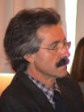

BENÍTEZ, Antonio
E-mail:
abenitez@filos.ucm.es

Perfil
Académico:
Junio-1981
Tesis doctoral “La teoría de la acción social según Alfred Schütz”,
Universidad de Salamanca.
Diciembre-1973
Memoria de Licenciatura “La noción de ser en la filosofía de Ortega
y Gasset”, Universidad Complutense de Madrid.
1968-1973 Licenciatura en Filosofía, Universidad Complutense de
Madrid.
Desde 1/07/86 -
Prof.Titular - Universidad
Universidad
Complutense de Madrid.
Departamento de Lógica y Filosofía de la
ciencia Universidad Complutense de Madrid.
Actividad docente:
Licenciatura
Desde el curso
1986-87 ha enseñado: Lógica, Filosofía del Lenguaje, Métodos de
programación y Fundamentos de Inteligencia Artificial.
Doctorado
2002-2003 -
Algunas tesis emergentistas en el problema mente-cuerpo. 3 créditos.
Programa de Ciencias Cognitivas.
2001-2002 - En
torno a la Inteligencia Artificial. 3 créditos. Programa de Ciencias
Cognitivas
2000-2001 -
Conexionismo: Filosofía e Inteligencia Artificial. 3 créditos.
Programa de Ciencias cognitivas
1999-2000 -
Filosofía, Lógica e Inteligencia Artificial. 3 créditos. Programa de
Ciencias cognitivas
2001-2002 -
Profesor en el Mestrado em Filosofia, Especializaçao em Ciências
Cognitivas de la Universidad Católica Portuguesa. Facultad de
Filosofía de Braga (Portugal).
Proyectos de investigación:
2002-09-21 -
Novas imagens do ser humano e das relações interpessoais que emergem
das ciencias cognitivas
2000 -
Prácticas de Lógica vía Internet
2000 -
Objetivación de las dificultades de los alumnos de 1º de Filosofía y
ensayo de lecturas filosóficas
1997/2000 -
Modelos funcionales de la mente: una revisión crítica
1991/93 -
Evaluación empírica de sistemas de inducción para el desarrollo
semi-automático de Bases de Conocimiento.
1985/88 -
COMPUTATIO ORTEGUIANA. Un sistema computacional interactivo para el
análisis filológico, lingüístico y filosófico de la obra de Ortega y
Gasset.
.